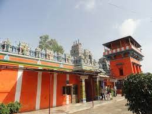

Karmanghat Hanuman Temple

- This Temple is Erected by the Kakatiyas in the 12th century.
- It holds great historical importance,
when Aurangzeb had tried to bring down the temple.
- He heard a thunderous voice say,“Mandir todna
hai toh Rajan, kar man ghat”, which translates to ‘If you want to break the temple, O King,
harden your heart’.
- Hence the name ‘Kar-Man-Ghat’ and the idol of Lord Hanuman is seen meditating.
- The devotees call it Dhyana Anjaneya Swamy.